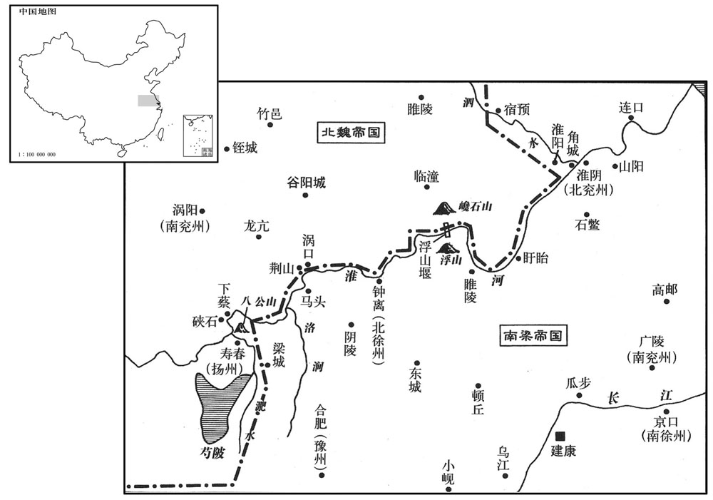

公元516年资治通鉴：本年记事、原文与白话对照
按原书编年位置阅读；追叙和史论不等于本年发生的事件。白话采用所据译本，缺译不以生成译文补齐。
卷148 · 本年记事
公元516年 · 梁高祖武皇帝天监十五年
十五年〔（丙申、五一六）〕
上传原文的注释括号有异常，字符原样保留；无法可靠划分的段落默认全文显示。
本年事件索引（现代整理）
- 北魏大赦并改元熙平
- 李平抵寿阳统领诸军攻打西硖石
- 崔延伯筑桥断梁军水路，赵祖悦献城被斩
- 胡太后命崔亮乘胜进军，崔亮擅自撤回获免死
- 元匡弹劾于忠擅权，胡太后拒绝追究
- 元匡弹劾侯刚掠杀羽林，侯刚被削户免职
- 发生日食
- 北魏论功升迁李崇、李平，崔亮因争功被改任
- 萧宝寅将梁武帝招诱书信呈交北魏朝廷
- 康绚用引流计减轻淮堰水患，解救寿阳
- 张豹子诬告康绚通魏，梁武帝召康绚还朝
- 胡太后追念于忠旧功，恢复其爵位并封崔光
- 张齐败于元法僧之子，傅竖眼率军恢复益州
- 刘氏率守军坚守关城百余日，击退梁军
- 梁任王莹、袁昂、王暕为尚书台重臣
- 傅竖眼连败张齐，东益州复归北魏
- 北魏任胡国珍为雍州刺史
- 浮山堰崩毁，淮边十余万户漂流入海
- 崔光劝胡太后减少私访宗戚勋贵
- 袁翻建议改善边将选任，胡太后未采纳
- 胡太后大兴佛寺，李崇劝修明堂太学未被采纳
- 李玚劝胡太后限制百姓弃家为僧，遭罚金
- 北魏田益宗求任东豫州刺史未准，后来去世
- 柔然伏跋可汗击败高车并杀其王弥俄突

本年形势与背景参考图
春，正月，戊辰朔，魏大赦，改元熙平。
春季，正月戊辰（初一），北魏大赦天下，改年号为熙平。
魏崔亮攻硖石未下，与李崇约水陆俱进，崇屡违期不至。〔李崇时镇寿阳。〕胡太后以诸将不壹，乃以吏部尚书李平为使持节、镇军大将军兼尚书右仆射，将步骑二千赴寿阳，别为行台，节度诸军，〔将，即亮翻。使，疏吏翻。骑，奇寄翻。〕如有乖异，以军法从事。萧宝寅遣轻车将军刘智文等渡淮，攻破三垒；二月，乙巳，又败将军桓孟孙等于淮北。〔败，补迈翻。〕李平至硖石，督李崇、崔亮等水〔【章：十二行本「水」上有「刻日」二字；乙十一行本同。】〕陆进攻，无敢乖互，〔乖，异也。互，差也。〕战屡有功。
北魏崔亮攻打硖石城没能攻下来，就和李崇约定水陆并进，李崇多次违反约定时间不来。胡太后因为众将不和，就委任吏部尚书李平为使持节、镇军大将军兼尚书右仆射，率领步兵、骑兵二千人赶到寿阳，另立行台，指挥调遣各部队，如果有违抗不听命令的人，便用军法来制裁。萧宝寅派轻军将军刘智文等人渡过淮河，攻破了三座营垒。二月乙巳（初八），又大淮河北部打败了将军垣孟孙等人。李平来到硖石，督促李崇、崔亮等军队水陆并进，没有人敢违背命令，几次作战都获胜。
上使左卫将军昌义之将兵救浮山，未至，康绚已击魏兵，却之。〔绚，许县翻。考异曰：绚传：「十二月魏遣李昙定督众军来战。」按魏帝纪此年正月乃遣李平节度诸军，绚传误也。昙定，即平字也。〕上使义之与直合王神念泝淮救硖石。〔泝，苏故翻。考异曰：李崇传：「衍遣赵祖悦袭据西硖石，又遣义之、神念帅水军泝淮而上，规取寿春。」按义之传，绚破魏军，义之乃救硖石，今从之。〕崔亮遣将军博陵崔延伯守下蔡，〔下蔡县，汉属沛郡，梁置下蔡郡，属豫州。水经注：淮水自峡石北径下蔡故城东本州岛来之城也。吴季札始邑延陵，后邑州来，故曰延州来季子。春秋，襄二年，蔡成公自新蔡迁于州来，谓之下蔡。淮之东岸又有一城，下蔡新城也。二城对据，翼带淮濆。按蔡有三：蔡州上蔡县，蔡仲始封之邑也；又有新蔡，蔡平侯自上蔡迁都于此；又有下蔡县，蔡成公所迁也。〕延伯与别将伊瓮生夹淮为营。延伯取车轮去辋，削锐其辐，两两接对，揉竹为焴，〔将，即亮翻。去，羌吕翻。辋，扶纺翻，车之牙，车輮也。辐，方目翻，轮轑也。揉，人九翻。焴，古恒翻，大索也。〕贯连相属，并十余道，横水为桥，两头施大鹿卢，〔鹿卢，圆转之木。属，之欲翻。〕出没随意，不可烧斫。既断赵祖悦走路，又令战舰不通，义之、神念屯梁城不得进。〔呜呼，吾国之失襄阳，亦以水陆援断而诸将不进也！断，丁管翻。舰，户黯翻。〕李平部分水陆攻硖石，〔分，扶问翻。〕克其外城；乙丑，祖悦出降，斩之，尽俘其众。〔降，户江翻。〕
梁武帝派左卫将军昌义之领兵去解救浮山，军队没有赶到时，康绚已经开始攻打北魏军队，击退了他们。梁武帝派昌义之和直王神念溯淮河而上以援救硖石。崔亮派遣将军博陵人崔延伯驻守下蔡，崔延伯和副将伊瓮生沿着淮河崐两岸扎营。崔延伯把车轮的外周去掉，把轮辐削尖，每两辆车对接在一起，用柔软的竹子作成竹索，连贯并列起来，十多辆车并在一起，横在水里作为桥梁，两头设置大辘轳，使桥可以随意出没，不容易烧毁。既切断了赵祖悦的逃路，又使战船不能通行，昌义之、王神念驻扎在梁城不能够前进。李平部署军队分水陆攻打硖石，攻克了外城。乙丑（二十八日），赵祖悦出城投降，被杀掉，他的部下都被俘获。
胡太后赐崔亮书，使乘胜深入。平部分诸将，水陆并进，攻浮山堰；亮违平节度，以疾请还，随表辄发。平奏处亮死刑，〔处，昌吕翻。〕太后令曰：「亮去留自擅，违我经略，虽有小捷，岂免大咎！但吾摄御万机，庶几恶杀，〔几，居依翻。恶，乌故翻。亮，崔光之族弟也，故平奏不行。〕可听特以功补过。」魏师遂还。〔还，从宣翻，又如字。〕
胡太后赐给崔亮书信，命令他乘胜深入。李平分派各将领从水旱两路一同出发，攻打浮山堰。崔亮违抗李平的指挥，借口患病请求撤还，并且刚刚上书就撤军了。李平上书建议判处崔亮死刑，太后下命令说：“崔亮进退自作主张，违背了我的战略计划，虽然获得了一些小的胜利，怎么能免除大的罪过！但是我日理万机，希望不要轻易杀戮，可以听任他将功赎罪。”于是北魏军队就返回了。
魏中尉元匡奏弹于忠「幸国大灾，专擅朝命，裴、郭受冤，〔谓裴植、郭祚。弹，徒丹翻。朝，直遥翻。〕宰辅黜辱。〔谓高阳王雍被黜，后又以授忠茅土，乞自贬退也。〕又自矫旨为仪同三司、尚书令，领崇训卫尉，原其此意，欲以无上自处。〔处，昌吕翻。；下尉处同。〕既事在恩后，〔恩后，谓赦恩之后也。〕宜加显戮，请遣御史一人就州行决。〔于忠时为冀州刺史，欲就州戮之。〕自去岁世宗晏驾以后，皇太后未亲览，以前诸不由阶级，或发门下诏书，或由中书宣敕，擅相拜授者，己经恩宥，正可免罪，并宜追夺。」太后令曰：「忠已蒙特原，无宜追罪；余如奏。」
北魏中尉元匡上书揭发于忠“借着国家有难，独揽大权，使裴植、郭祚蒙受冤屈，宰相贬黜受辱，并且又自己假造圣旨当了仪同三司、尚书令，还兼任崇训卫尉。推论他的这番心意，是想自处至尊之位，既然事情发生在大赦之后，应当公开诛戮，请求派一位御史到州里去执行处决。自从去年宣武帝去世以后，皇太后没能亲理朝政，因此以前各种事不按规定办理，有的由门下省发出诏书，有的由中书省宣布敕令，擅自相互封任，已经受到皇恩宽恕的，确实应当免罪，但也应当追回封授。”皇太后说：“于忠已经受到了特别的宽恕，不好再追究罪责了，其他的都同意你的意见。”
匡又弹侍中侯刚掠杀羽林。〔掠，音亮；下同。〕刚本以善烹调为尚食典御，〔尝食典御，魏官也，掌调和御食，温凉寒热，以时供进则尝之。或曰：「尝」当作「尚」，平、去二字通用。〕凡三十年，以有德于太后，〔事见上年。〕颇专恣用事，王公皆畏附之。廷尉处刚大辟，〔辟，毗亦翻。〕太后曰：「刚因公事掠人，邂逅致死，于律不坐。」少卿陈郡袁翻曰：「『邂逅』，谓情状已露，隐避不引，〔不引，谓不引伏也。邂，户介翻。逅，户遘翻。〕考讯以理者也。今此羽林，问则具首，〔首，式又翻。〕刚口唱打杀，挝筑非理，安得谓之『邂逅』！」〔挝，则瓜翻。〕太后乃削刚户三百，解尝严：「尝」改「尚」。】〕食典御。
元匡又弹劾侍中侯刚捕杀羽林卫士。侯刚本来凭着善于烹调作了尚食典御，大约作了三十年。因为对太后有恩，非常专横霸道，王公大臣都害怕他并且依附他。廷尉判处侯刚死刑，太后说：“侯刚是为公事抓人，不经意使人死掉了，按法律不应处死。”少卿陈郡人袁翻说：“您所谓的‘不经意’是指罪证已经暴露，却掩藏起来不肯招认，于是就按法律拷问他们。现在被侯刚打死的这个羽林卫士，问他什么就供认什么，侯刚却嘴里大叫打死他，无理拷打，怎能说是‘不经意’！”于是太后才削除了侯刚三面户封邑，解除了他尚食典御的职务。
三月，戊戌朔，日有食之。
三月戊戌朔（初一），出现日食。
魏论西硖石之功，辛未，以李崇为骠骑将军，加仪同三司，〔骠，匹妙翻。骑，奇寄翻。〕李平为尚书右仆射，崔亮进号镇北将军。亮与平争功于禁中，太后以亮为殿中尚书。
北魏朝廷议论给西硖石之战中的将领行赏，辛未（初四），任命李崇为骠骑将军，加封仪同三司，李平为尚书右仆射，崔亮增加镇北将军的封号。崔亮和李平在朝廷中争夺功劳，最后太后让崔亮作了殿中尚书。
魏萧宝寅在淮堰，上为手书诱之，使袭彭城，许送其国庙及室家诸从还北，〔诸从，犹群从也。从，才用翻。〕宝寅表上其书于魏朝。〔上，时掌翻。朝，直遥翻。〕
北魏萧宝寅驻扎在淮河坝上，梁武帝写了亲笔信招诱他，让他攻打彭城，答应把他的国庙和妻妾弟兄子侄们送到北方，萧宝寅把梁武帝的信呈交给北魏朝廷。
或谓康绚曰：「四渎，天所以节宣其气，不可久塞，〔国语，周太子晋曰：「古之长民者，不堕山，不崇薮，不防川，不宝泽。夫山，土之聚也；薮，物之归也；川，气之导也；泽，水之锺也。天地成而聚于高，归物于下，疏为川谷以导其气，陂塘污庳以锺其美。」塞，悉则翻。〕若凿鲆东注，则游波宽缓，堰得不坏。」绚乃开鲆东注。又纵反间于魏曰：「梁人所惧开鲆，不畏野战。」萧宝寅信之，凿山深五丈，开鲆北注，水日夜分流犹不减，〔丁度集韵：鲆，与湫同，将由翻。间，古苋翻。深，式浸翻。〕魏军竟罢归。水之所及，夹淮方数百里。李崇作浮桥于硖石戍间，又筑魏昌城于八公山东南以备。寿阳城坏，居民散就冈陇，〔山脊为冈，高丘为陇。〕其水清彻，俯视庐舍耱墓，了然在下。
有人对康绚说：“四河，是天用来宣泄它的‘真气’的，不能够长久地阻塞它，如果凿开水向东灌，那么流水宽缓，大坝才能不破坏。”康绚就凿开水东灌。又对北魏使用反间计，说：“梁朝人怕的是掘开水，不怕攻城野战。”萧宝寅相信了，凿山五丈多深，掘开水向北灌注，水日夜分流仍然不见减少，北魏军队竟然撤军回去了。水到之处，沿淮河方圆数百里都成了泽国。李崇在硖石戌之间搭起浮桥，又在八公山东南筑起魏昌城，来防备寿阳城被毁坏，居民们分散到山丘上。水非常清流澈，向下俯视，房屋墓穴都清晰地浮在水中。
初，堰起于徐州境内，〔浮山在锺离郡界，梁置徐州于锺离。〕刺史张豹子宣言，谓己必掌其事；既而康绚以他官来监作，〔监，古衔翻。〕豹子甚惭。俄而敕豹子受绚节度，豹子遂谮绚与魏交通，上虽不纳，犹以事毕征绚还。〔绚还则堰坏矣。〕
起初，淮河坝从徐州境内建起，刺史张豹子宣称，认为自己一定能掌管这件事，等到后来康绚以其他的官职来监督建坝，张豹子非常恼怒。不久，张豹子受令由康绚管辖，他就诬告康绚和北魏勾通，梁武帝虽然没有听信他的话，却用工程完毕为理由召回了康绚。
魏胡太后追思于忠之功，曰：「岂宜以一谬弃其余勋！」〔胡后以于忠拥护为功；若忠之专横，其谬固非一也。〕复封忠为灵寿县公，〔复，扶又翻。〕亦封崔光为平恩县侯。
北魏胡太后追忆于忠的功劳，说：“怎么能凭着一次错误就不承认他的其他功绩！”便重新封于忠为灵寿县公，也封崔光为平恩县侯。
魏元法僧遣其子景隆将兵拒张齐，〔将，即亮翻；下同。〕齐与战于葭萌，大破之，屠十余城，遂围武兴。法僧婴城自守，境内皆叛，法僧遣使间道告急于魏。〔使，疏吏翻。间，古苋翻。〕魏驿召镇南军司傅竖眼于淮南，以为益州刺史、西征都督，将步骑三千以赴之。〔竖，而庾翻。骑，奇寄翻。〕竖眼入境，转战三日，行二百余里，九遇皆捷。五月，竖眼击杀梁州刺史任太洪。民、獠闻竖眼至，皆喜，迎拜于路者相继。〔民、獠恶法僧而怀竖眼，故迎之者属路。任，音壬。獠，鲁皓翻。〕张齐退保白水，竖眼入州，〔入武兴也。〕白水以东民皆安业。
北魏元法僧派他的儿子元景隆带兵抗击张齐，张齐与景隆在葭萌作战，大败景隆，在十多个城市进行屠杀，最后包围了武兴。元法僧闭城固守，境内军民都背叛了他，元法僧派使节从小路去向北魏告急。北魏用驿车从淮南召回镇南军司傅竖眼，让他作益州刺史、西征都督，率领步兵、骑兵三千人开赴武兴。傅竖眼进入武兴境内，转战三天，走了二百多里，作战九次都取得胜利。五月，傅竖眼杀死了梁州刺史任太洪。百姓、獠人听说傅竖眼来到，都很高兴，在路上欢迎接待的人络绎不绝。张齐退回去保卫白水，傅竖眼进入梁州，白水城以东的百姓都安居乐业了。
魏梓潼太守苟金龙领关城戍主，梁兵至，金龙疾病，不堪部分，〔分，扶问翻。〕其妻刘氏帅厉城民，乘城拒战，〔帅，读曰率。〕百有余日，士卒死伤过半。戍副高景谋叛，刘氏斩景及其党与数千人，〔数千，当作数十。〕自余将士，分衣减食，劳逸必同，莫不畏而怀之。井在城外，为梁兵所据，会天大雨，刘氏命出公私布绢及衣服悬之，绞而取水，城中所有杂物悉储之。〔杂物，谓瓶、罂、瓮、盎之属。〕竖眼至，梁兵乃退，魏人封其子为平昌县子。
北魏梓潼太守苟金龙兼任关城戍主，梁朝军队来到时，苟金龙病重，不能指挥。他的妻子刘氏率领振作的城中百姓，凭借城池抗击敌兵，打了一百多天，兵士死伤过半。副将高景阴谋叛变，刘氏杀掉高景以及他的同党几十人，对剩下的将士，平分粮食和衣物，劳逸相同，众人莫不既畏惧她又依赖她。水井位于城外，被梁兵把守，正赶上天下大雨，刘氏命令拿出公家和私人的布、绢和衣服接雨，然后绞布取水，用城里所有的器具储存水。傅竖眼来到，梁兵才撤退，北魏封她的儿子为平昌县子。
六月，庚子，以尚书令王莹为左光禄大夫、开府仪同三司，尚书右仆射袁昂为左仆射，吏部尚书王暕为右仆射。暕，俭之子也。〔暕，古限翻。王俭，齐初佐命。〕
本段缺少可靠对应白话，原文完整保留；未使用生成译文。
张齐数出白水，侵魏葭萌，傅竖眼遣虎威将军强虬攻信义将将杨兴起，杀之，复取白水。〔数，所角翻。强，其两翻，又如字。复，扶又翻；下州复、不复同。〕宁朔将军王光昭又败于阴平，张齐亲帅骁勇二万余人与傅竖眼战，〔骁，坚尧翻。〕秋，七月，齐军大败，走还，小剑、大剑诸戍皆弃城走，〔今剑州剆门县有大剑山，又有小剑山在其西北三十里，又有小剑故城在益昌县西南五十里。大剑虽号天险，有阨塞可守，崇墉之间，径路颇夷。小剑则凿石架阁，有不容越，李白匠谓「一夫当关，万夫莫开」者是也。〕东益州复入于魏。
张齐多次从白水出兵，侵犯北魏的葭萌，傅竖眼派虎威将军强虬攻打信义将军杨兴起，杀死了他，重新夺取了白水。宁朔将军王光昭又在阴平被打败，张齐亲自率领二万多勇士和傅竖眼作战。秋季，七月，张齐的军队大败，逃了回去，小剑、大剑两地的驻军都弃城逃跑，东益州重新回归北魏。
八月，乙巳，魏以胡国珍为骠骑大将军、开府仪同三司、雍州刺史。〔骠，匹妙翻。骑，奇寄翻。雍，于用翻。〕国珍年老，太后实不欲令出，止欲示以方面之荣；竟不行。
八月乙巳（十一日），北魏任命胡国珍为骠骑大将军、开府仪同三司、雍州刺史。胡国珍年老，太后实际上不想让他出行，只不过想给他统治一方的荣誉，所以最终也没有出行。
康绚既还，张豹子不复修淮堰。九月，丁丑，淮水暴涨，堰坏，其声如雷，闻三百里，〔闻，音问。〕缘淮城戍村落十余万口皆漂入海。初，魏人患淮堰，以任城王澄为大将军、大都督南讨诸军事，勒众十万，将出徐州来攻堰，尚书右仆射李平以为「不假兵力，终当自坏。」及闻破，太后大喜，赏平甚厚，澄遂不行。
康绚回去之后，张豹子不再修建淮河堰。九月丁丑（十三日），淮河水急剧上涨，河堰被冲毁，决堤声象雷鸣一样，三百里以内都能听到。沿着淮河的城镇村庄有十多万人被漂入海中。当初，北魏人担心淮河堰的修建会造成危害，就任命任城王元澄为大将军、大都督南讨诸军事，统率十万大军，即将从徐州出兵攻打淮河堰，尚书右仆射李平认为：“不需要动用兵力，淮河堰最后也会自己毁掉。”等到听说河堰已冲毁，太后非常高兴，赏赐李平很多东西，元澄于是也没有出兵。
魏胡太后数幸宗戚勋贵之家，〔数，所角翻。〕侍中崔光表谏曰：「礼，诸侯非问疾吊丧而入诸臣之家，谓之君臣为谑。〔记礼运之辞也。注云：无故而乳之，是戏谑也，陈灵公与孔宁、仪行父数如夏氏，以取弒焉。〕不言王后夫人，明无适臣家之义。夫人，父母在有归宁，没则使卿宁。〔左传庄二十七年冬，杞伯姬来，归宁也。杜预注曰：宁，问父母安否。襄十二年，楚司马子庚聘于秦，为夫人宁，礼也。注曰：诸侯夫人，父母既没，归宁使卿，故曰礼。〕汉上官皇后将废昌邑，霍光，外祖也，亲为宰辅，后犹御武帐以接群臣，〔事见二十四卷汉昭帝元平元年。〕示男女之别也。〔别，彼列翻。〕今帝族方衍，勋贵增迁，祗请遂多，将成彝式。〔方衍，谓生子也。增迁，谓增秩迁官也。祗，敬也宗戚勋贵之家，凡有吉庆，皆有吉庆，皆请太后临幸。〕愿陛下简息游幸，则率土属赖，含生仰悦矣。」〔属，之欲翻；下请属同。〕
北魏胡太后多次驾临皇室贵戚以及功臣显贵的家中，侍中崔光上书劝谏说：“《礼记》上讲，诸侯如果不是为了慰问病人或追悼死人而进入大臣的家中，就叫作君臣之间失礼戏谑。没有提到王后夫人，是为了表明她们根本没有去大臣家的道理。诸侯的夫人，父母在时可以回家问侯，父母不在就派大臣去问侯。汉朝的上官皇后将要废掉昌邑王时，霍光是她的外祖父，担任宰相，皇后仍然悬挂武帐来接见众大臣，是为了表明男女要加以区分。现在皇族正当繁衍兴盛之时，宗戚勋贵升官的很多，请您的人就多起来了，快要成为常规了。希望您减少和停止出游探视，如此则天下归心，众生仰戴。”
任城王澄以北边镇将选举弥轻，〔将，即亮翻。〕恐贼虏窥边，山陵危迫，〔魏自显祖以上，山陵皆在云中。〕奏求重镇将之选，修警备之严，诏公卿议之。廷尉少卿袁翻议，〔秦、汉以来九卿各一卿，魏太和十五年九卿各置少卿，盖仿周官六卿有小宰、小司徒、小宗伯、小司马、小司寇、小司空之遗制也。〕以为「比缘边州郡，官不择人，唯论资级。或值贪污之人，广开戍逻，多置帅领，或用其左右姻亲，或受人货财请属，皆无防寇之心，唯有聚敛之意。〔比，毗至翻。逻，郎佐翻。帅，所类翻。属，之欲翻。敛，力赡翻。〕其勇力之兵，驱令抄掠，若万强敌，即为如虏，如有执获，夺为己富。其羸弱老小之辈，微解金铁之工，少闲草木之作，〔抄，楚交翻。羸，伦为翻。解，户买翻，晓也。闲，习也。〕无不搜营穷垒，苦役百端。自余或伐木深山，或芸草平陆，贩贸往还，相望道路。此等禄既不多，死于沟渎者什常七八。〔自古至今，守边之兵皆病于此。贸，音茂。〕是以邻敌伺间，扰我疆场，皆由边任不得其人故也。愚谓自今已后，南北边诸藩及所统郡县，府佐统军至于戍主，皆令朝臣王公已下各举所知，必选其才，不拘阶级；若称职及败官，并所举之人随事赏罚。」太后不能用。〔间，古苋翻。场，音亦。朝，直遥翻。称，尺证翻。败，补迈翻。〕及正光之末，北边盗贼群起，遂逼旧都，犯山陵，如澄所虑。〔正光四年，破六韩拔陵、卫可孤等反，孝昌初年，云中没矣。〕
任城王元澄认为对北部边境的守将选择任用得太轻率，难以放心，恐怕敌崐人会觊觎边境，皇陵受到危害，于是上书请求注重守边将领的选派，严整防守的纪律，胡太后下令让百官商议这个意见。廷尉少卿袁翻认为：“近来过境州郡中，封官从不按照人才选择，只是论资排辈。有时碰上贪污的官员，大量开设哨所，过多地设置将领，有的人重用他的亲属，有的人接受别人求官的贿赂，全无防范敌人的意识，只有聚敛钱财和贪心。那些勇猛有力的兵士，就被驱赶着去抢劫掠夺，如果碰到强大的敌兵，就被俘虏，如果捕获到东西，就变成自己的财富。那些瘦弱年老和年少的人，稍微懂一些冶炼技艺以及木工手艺的，都被从营垒中搜寻出来，让他们遭受百般的苦役。其余的人有的在深山中伐木，有的在平地锄草，来回贩运作买卖的人在路上川流不息。这些人的钱饷不足，供给也有限，都收他们实绢，不给他们现粮，用尽他们的精力，减少他们的衣物，使用他们的人工，却限制他们饮食，让他们一年四季不止息地干，再加上疾病劳苦，死在沟壕中的人十有七八。因此，境外的敌人寻找时机来侵扰我们的边境，这都是由于边境官员的任用不能称职造成的。我认为从现在开始，南北边境各藩镇以及所管辖的各郡县府佐、统军到戍主，都应由朝廷大臣中王公以下的人举荐他们所了解的人来担任，一定要选拔合适的人才，不拘于出身等级，如果所推荐的人称职或渎职，就连同举荐的人一同赏或罚。”太后没有采纳他的建议。到了正光末年，北部边郡的强盗蜂拥而起，终于逼近旧都，侵犯皇陵，正象元澄所担心的那样。
初，魏世宗作瑶光寺，未就，是岁，胡太后又作永宁寺，〔水经注：谷渠南流，出太尉、司徒两坊间，水西有永宁寺。〕皆宫侧；又作石窟寺于伊阙口，皆极土木之美。而永宁尤盛，有金像高丈八者一，如中人者十，玉像二。为九层浮图，掘地筑基，下及黄泉；〔杜预曰：地中之泉，故日黄泉。〕浮图高九十丈，上剎复高十丈，〔高，居报翻。剎，所辖翻。剎，柱也，浮图上柱；今谓之相轮。复，扶又翻。〕每夜静，钤铎声闻十里。〔闻，音问。〕佛殿如太极殿，南门如端门。僧房千间，珠玉锦绣，骇人心目。自佛法入中国，塔庙之盛，未之有也。〔汉永明〔平〕中，佛法入中国，佛弟子收奉舍利，建宫宇，号为塔，亦胡言，犹宗庙也，故世称塔庙。〕扬州刺史李崇上表，以为「高祖迁都垂三十年，〔迁都见一百三十八卷齐世永明十一年。〕明堂未修，太学荒废，城阙府寺颇亦颓坏，非所以追隆堂构，〔书大诰曰‧若考作室既底法，厥子乃弗肯堂，矧肯构！〕仪刑万国者也。今国子虽有学官之名，而无教授之实，何异兔丝、燕麦，南箕、北斗！〔尔雅曰：唐、蒙、女萝，兔丝。释名日：唐也，蒙也，女萝也，兔丝也，一物四名。毛氏诗传曰：女萝，兔丝；兔丝，松萝也。陆玑草木疏曰：兔丝，蔓连草上生，黄赤如金，合药兔丝子是也。公萝，自蔓松上生，枝正青，与兔丝殊异。本草曰：兔丝生川泽田野，蔓延草木之上，瞿麦，一名燕麦，又名雀麦，其苗与麦同，但穗细长而疏。言兔丝有丝之名而不可以织，燕麦有麦之名而不可以食。古歌曰：田中兔丝，如何可络！道边燕麦，何尝可获！诗云：维南有箕，不可以簸扬。维北有斗，不可以挹酒浆。皆谓有名无实也。〕事不两兴，须有进退，宜罢尚方雕靡之作，省永宁土木之功，减瑶光材瓦之力，分石窟镌琢之劳，及诸事役非急者，于三时农隙修此数条，使国容严显，礼化兴行，不亦休哉！」太后优令答之，而不用其言。
当初，北魏宣武帝修建瑶光寺，没能建成。这一年，胡太后又修建永宁寺，都建在宫殿旁边。又在伊阙口修筑了石窟寺，都穷尽了土木建筑的华美。其中永宁寺尤其壮丽，有一座高一丈八尺的金像，十座普通人高的金像，两座玉像。还建了一座九层佛塔，挖筑地基时，把地下的泉水都挖出来了。佛塔高九十丈，顶上面的柱子还有十丈高，每当夜深人静，塔上的铃铎声十里以外都听得到。佛殿如同太极殿，南门如同端门。其中有一千间僧人住房，珍珠玉石锦绣琳琅，使人心摇目眩。自从佛教传入中原，这样壮观的塔庙从未有过。扬州刺史李崇上书，认为：“高祖迁都将近三十年了，宫殿没能加以修筑，太学也荒废了，城楼府庙也很多都残破了，这不是发扬光大祖宗的基业，作为万国表率的样子。现在国子监虽然有学官的名义，却没有教授学生的实际效用，这与那不能纺织的兔丝、不能收获的燕麦、不能簸扬的南箕、不能盛酒的北斗有什么不同呢？事情不能两全其美，应当有进有退，所以应当停止尚方署中雕缕奢靡的劳作，节减永宁寺土木修建的事情，减少瑶光寺木材砖瓦的费用，分散修筑石窟的劳力，连同那些不急用的劳役一同都加以减省，等到农闲时节再修建上面所说那些需修缮的建筑，使国家威严显赫，礼仪教化大兴，岂不是真正美好吗？”太后宽容地回答了他的建议，却没有采用他的意见。
太后好事佛，民多绝户为沙门，高阳王友李上言，“三千之罪莫大于不孝，不孝之大无过于绝祀，岂得轻纵背礼之情，肆其向法之意，一身亲老，弃家绝养，缺当世之礼而求将来之益！孔子云：‘未知生，焉知死？’安有弃堂堂之政而从鬼教乎！又，今南服未静，众役仍烦，百姓之情，实多避役，若复听之，恐捐弃孝慈，比屋皆为沙门矣。”都统僧暹等忿谓之“鬼教”，以为谤佛，泣诉于太后。太后责之，曰：“天曰神，地曰祗，人曰鬼。《传》曰：‘明则有礼乐，幽则有鬼神。’然则明者为堂堂，幽者为鬼教。佛本出于人，名之为鬼，愚谓非谤。”太后虽知言为允，难违暹等之意，罚金一两。胡太后喜欢从事佛事，因此百姓很多都绝了后代使自己的独生子成为和尚，高阳王的朋友李上书说：“三千种罪过没有比不孝更大的，最大的不孝又没有超过断绝香火后代的，怎么能轻易地纵容百姓们违反礼法之情，抛弃他们遵奉法令之意，独生子对年老双亲丢下不奉养，用违背现世的礼法去求得来世的善报呢！孔子说‘不知什么是生，怎么知道什么是死？’怎么能放弃光明正大的礼政去听信那鬼邪之教呢！并且，现在南面的兵戈还没有平息，各种劳役仍然不断，百姓的心思实际上是想逃避劳役，如果再听任他们这样下去，恐怕会丢弃孝道慈爱，家家户户都作和尚了。”都统僧暹等人气愤于李所说的“鬼教”，认为他是在诽谤佛教，对胡太后哭泣着控诉他。太后责备李，李说：“天叫神，地叫祗，人叫鬼。《礼记》中说：‘明则有礼乐，幽则有鬼神。’因此明者称为堂堂，幽者称为鬼教。佛是由人变成的，叫它是鬼，我认为不能说是诽谤。”胡太后虽然明白李的话正确，却难以违背僧暹等人的心愿，便罚了李一两黄金。
太后好事佛，民多绝户为沙门，〔家有一子，出为沙门，其户绝矣。好，呼到翻。〕高阳王友李玚上言，「三千之罪莫大于不孝，不孝之大无过于绝祀，〔孔子曰：「五刑之属三千，其罪莫大于不孝。」孟子曰：「不孝有三，无后为大。」玚，杖梗翻，又音畅。〕岂得轻纵背礼之情，肆其向法之意，一身亲老，弃家绝养，缺当世之礼而求将来之益！〔佛法以今世修种为来生因果。背，蒲妹翻。养，余亮翻。〕孔子云：『未知生，焉知死﹖』〔论语载孔子答子路之言。焉，于虔翻。〕安有弃堂堂之政而从鬼教乎！又，今南服未静，众役仍烦，百姓之情，实多避役，若复听之，恐捐弃孝慈，比屋皆为沙门矣。」〔复，扶又翻。比，毗必翻，又毗至翻。〕都统僧暹等忿玚谓之「鬼教」，以为谤佛，〔魏有沙门统，谓之都统，犹今都僧录。〕泣诉于太后。太后责之，玚曰：「天曰神，地曰祗，人曰鬼。传曰：『明则有礼乐，幽则有鬼神。』然则明者为堂堂，幽者为鬼教。佛本出于人，名之为鬼，愚谓非谤。」太后虽知玚言为允，难违暹等之意，罚玚金一两。
本段缺少可靠对应白话，原文完整保留；未使用生成译文。
魏征南大将军田益求为东豫州刺史，以招二子，太后不许，竟卒于洛阳。〔田益宗二子叛见上卷十三年。卒，子恤翻。〕
北魏征南大将军田益宗请求去作东豫州刺史，以便去招降他的两个叛乱的儿子，胡太后不答应，最后他死在了洛阳。
柔然伏跋可汗，壮健善用兵，〔可，从刊入声。汗，音寒。〕是岁，西击高车，大破之，执其王弥俄突，系其足于驽马，顿曳杀之，漆其头为饮器。〔弥俄突杀柔然佗汗见上卷七年。〕邻国先羁属柔然后叛去者，伏跋皆击灭之，其国复强。〔复，扶又翻；下贼复同。〕
柔然国的伏跋可汗，身体壮实高大，善于作战。这一年，他西攻高车，攻破高车城，抓获高车王弥俄突，把他的脚拴在马后面，拖死了他，又把他的头用来作了饮酒的器皿。邻国中凡是从前归属柔然后来又叛变的，都被伏跋消灭，伏跋的国家重新强大起来。
译本中未与胡注本可靠对应的内容
以下另列供核对版本差异，不并入胡注本正文。
译本所附古文
[7]夏，四月，淮堰成，长九里，下广一百四十丈，上广四十五丈，高二十崐丈，树以杞柳，军垒列居其上。
译本白话
夏季，四月，淮河大坝修成，长九里，下宽一百四十丈，上宽四十五丈，高二十丈，种上了杞柳树，军营就驻扎在坝上。
译本所附古文
魏梓潼太守苟金龙领关城戍主，梁兵至，金龙疾病，不堪部分，其妻刘氏帅厉城民，乘城拒战，百有余日，士卒死伤过半。戍副高景谋叛，刘氏斩景及其党与数千人，自余将士，分衣减食，劳逸必同，莫不畏而怀之。井在城外，为梁兵所据，会天大雨，刘氏命出公私布绢及衣服悬之，绞而取水，城中所有杂物悉储之。竖眼至，梁兵乃退，魏人封其子为平昌县子。 北魏梓潼太守苟金龙兼任关城戍主，梁朝军队来到时，苟金龙病重，不能指挥。他的妻子刘氏率领振作的城中百姓，凭借城池抗击敌兵，打了一百多天，兵士死伤过半。副将高景阴谋叛变，刘氏杀掉高景以及他的同党几十人，对剩下的将士，平分粮食和衣物，劳逸相同，众人莫不既畏惧她又依赖她。水井位于城外，被梁兵把守，正赶上天下大雨，刘氏命令拿出公家和私人的布、绢和衣服接雨，然后绞布取水，用城里所有的器具储存水。傅竖眼来到，梁兵才撤退，北魏封她的儿子为平昌县子。
译本白话
六月，庚子，以尚书令王莹为左光禄大夫、开府仪同三司，尚书右仆射袁昂为左仆射，吏部尚书王为右仆射。，俭之子也。[10]六月庚子（初五），梁朝任命尚书令王莹为左光禄大夫、开府仪同三司，任命尚书右仆射袁昂为左仆射，吏部尚书王为右仆射。王是王俭的儿子。
译本所附古文
[14]壬辰，大赦。
译本白话
壬辰（二十八日），梁朝颁布大赦令。
译本所附古文
[16]冬，十一月，交州刺史李斩交州反者阮宗孝，传首建康。
译本白话
冬季，十一月，梁朝交州刺史李杀死了交州叛乱的阮宗孝，将他的首级送到了国都建康。